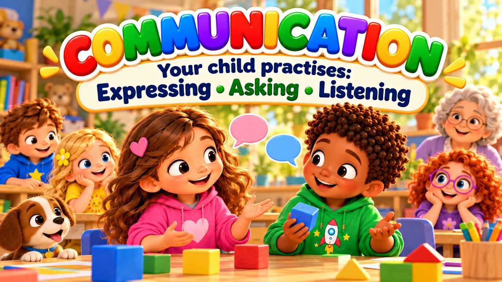
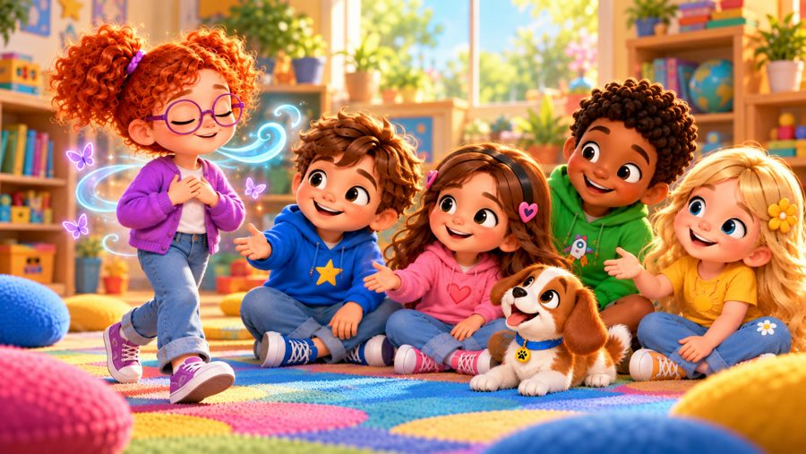

Use Your Words
A communication song for kids! 💬 Sing along with Max, Mia, Jay, Lily, Rosie and Buddy the puppy as they learn to use their words — to say how they feel, ask for what they need, and listen too!
"Use Your Words" is a sing-along communication song for kids. When Jay takes Mia's blue block, she stops, breathes and says it calmly instead of shouting. When Rosie feels shy about joining a game, she simply asks "Can I play?" — and when she doesn't understand the rules, she asks a question. With big karaoke lyrics on screen, it's perfect for preschool, kindergarten and early elementary kids (ages 3–8), at home or in the classroom.

▶💡 Why this skill matters: communication
When children learn to say what they feel and need, there is less shouting, grabbing and crying — and more understanding. Clear, kind communication is a skill they will use every day of their lives. Give them simple phrases to practise (“I feel… because…”, “Can I have a turn?”) and model them yourself.
👨👩👧 What your child learns
- Saying how they feel: "I feel…"
- Asking for what they need: "I need… Can you help me, please?"
- Speaking clearly and kindly instead of shouting or grabbing
- Asking to join in and asking questions when unsure
- Listening when someone else is talking
💬 Talk about it after the song
- What can you say when someone takes your toy?
- How can you ask to join a game?
- What do you do when someone else is talking?
🏅 Quiz & Certificate
Watched the song together? Now read each question aloud — your child points to the right picture. Answer all 6 questions and your child earns a printable certificate!
🔒 The name is only used to draw the certificate on your device. We don't save or send anything.
You did it! 🎉
All 6 answers are right! Type your child's name to make the certificate.
🖨️ Free printables
Free for home and classroom use. Print on A4 or Letter paper.
🖼️ Scenes from the song





🎵 More songs


🎤 Lyrics – Use Your Words
I've got something I want to say,
I can use my words today!
No need to shout,
no need to hide...
Take a breath
and say what's inside!
I was building on the floor,
Jay reached out and took one more.
"Hey! I needed that blue block!"
I felt upset and wanted to shout.
But I stopped and took a breath,
Then I knew what I could say:
"I'm still using that blue block.
Can I have it back, please?"
Jay looked up and said, "Okay!"
We worked it out the talking way!
Think about
what you want to say.
Speak clearly,
in a kind way.
Say how you feel,
say what you need.
Then listen too —
that's how we speak!
Use your words!
Say what you mean!
Tell me how you're feeling,
tell me what you need!
Use your words!
Clear and kind!
You can say what's happening
inside your heart and mind!
"I feel..."
"I need..."
"Can you help me, please?"
Talk and listen,
you and me!
Use your words!
That's the way
we understand each other
every day!
I wanted to join a game outside,
But I felt nervous standing by.
I could wait and hope they'd see,
Or use my voice and simply speak:
"Can I play with you today?"
"Sure! Come on!"
I heard them say.
And when I didn't understand
the rules they showed me with a hand.
I asked a question,
they explained,
and soon we all were in the game!
Think about
what you want to say.
Speak clearly,
in a kind way.
Say how you feel,
say what you need.
Then listen too —
that's how we speak!
Use your words!
Say what you mean!
Tell me how you're feeling,
tell me what you need!
Use your words!
Clear and kind!
You can say what's happening
inside your heart and mind!
"I feel..."
"I need..."
"Can you help me, please?"
Talk and listen,
you and me!
Use your words!
That's the way
we understand each other
every day!
Need some help?
ASK FOR IT!
Something bothering you?
SAY IT KINDLY!
Feeling sad?
SAY HOW YOU FEEL!
Don't understand?
ASK A QUESTION!
Someone else is talking?
LISTEN TOO!
Ready to speak?
YES, I AM!
Use your words...
CLEAR AND KIND!
My words can tell you
how I feel.
My words can tell you
what I need.
My words can ask,
my words can help.
And I can listen
when you speak!
Use your words!
Say what you mean!
Tell me how you're feeling,
tell me what you need!
Use your words!
Clear and kind!
You can say what's happening
inside your heart and mind!
"I feel..."
"I need..."
"Can you help me, please?"
"I don't understand."
"Can you show me?"
"Can I play?"
"Please listen to me."
Use your words!
Listen too!
Good communication
starts with me and you!
Take a breath...
Think what to say...
Speak with kindness...
and listen the same way!
Use your words!